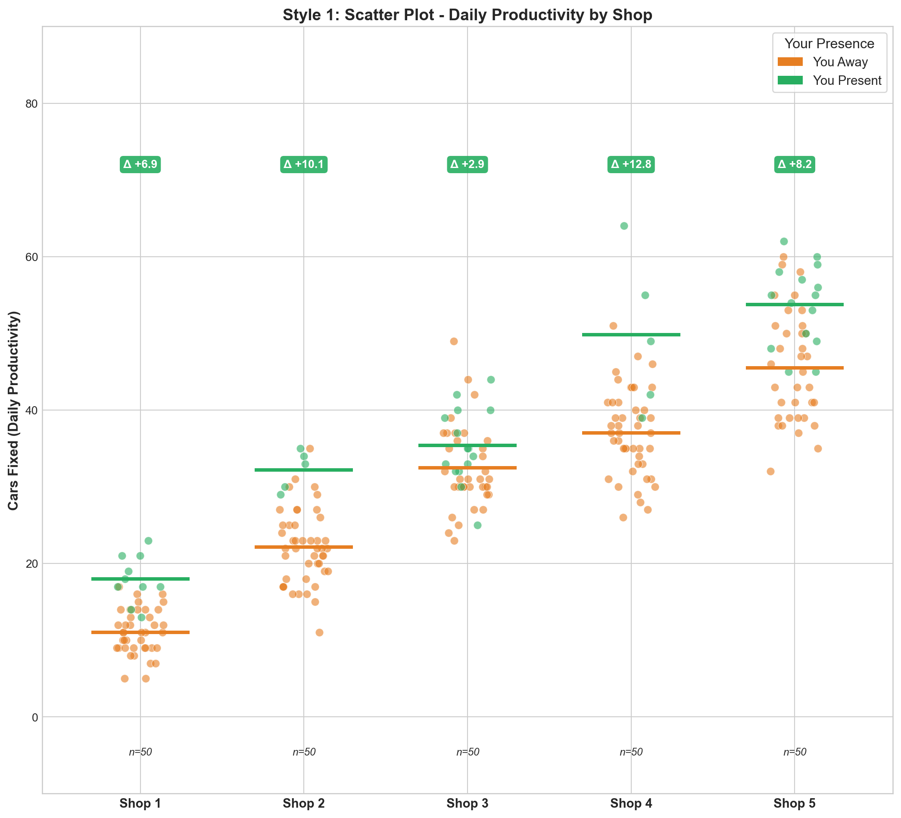
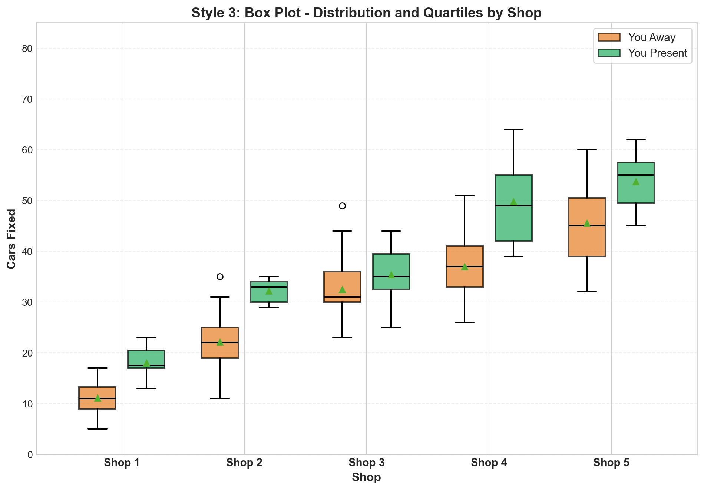

Patrick’s Auto Shop Productivity Report
Where Should You Spend Your Time for Maximum Productivity
The Bottom Line 🎯
Patrick, here’s what your data tells us: Your presence at the shop matters most at Shop 4 and Shop 1. When you’re there, these shops fix significantly more cars. Some other shops? They do just fine without you.
Our recommendation: Patrick should prioritize Shop 4 and Shop 1. He should visit Shop 4 and Shop 1 for half of the year. He should visit the other shops for the other half of the year.
What the Data Shows
We analyzed 250 days of productivity data across your 5 shops. Here’s every single day plotted—you can see the pattern clearly:
What the data shows: All shops are stacked in one view, with each column showing one shop’s daily productivity. Green dots = you were there, orange dots = you were away. The horizontal lines show the mean for each condition. The delta (Δ) shows how many more cars get fixed when you’re there. Shop 4 has the biggest delta (+12.8), while Shop 3 (your brother’s shop) shows the smallest improvement (+2.9)
Distribution Comparison: Bar Chart This view shows the average productivity for each shop when you’re away vs. when you’re present. Bars = average productivity. The delta (Δ) shows how many more cars get fixed when you’re present. Shop 4 has the biggest delta (+12.8), while Shop 3 (your brother’s shop) shows the smallest improvement (+2.9)

Reading this Bar Chart: The bars show the average productivity for each shop when you’re away vs. when you’re present. The delta (Δ) shows how many more cars get fixed when you’re present. Shop 4 has the biggest delta (+12.8), while Shop 3 (your brother’s shop) shows the smallest improvement (+2.9)

Reading this box and whisker plot: The box plot shows the distribution of productivity for each shop when you’re away vs. when you’re present. The box shows the quartiles, the median, and the outliers. The delta (Δ) shows how many more cars get fixed when you’re present. Shop 4 has the biggest delta (+12.8), while Shop 3 (your brother’s shop) shows the smallest improvement (+2.9)
fig, ax = plt.subplots(figsize=(10, 7))
# Calculate means
means_away = [carsDF[(carsDF['shopID'] == shop) & (carsDF['boss'] == 0)]['carsFixed'].mean() for shop in shop_ids]
means_present = [carsDF[(carsDF['shopID'] == shop) & (carsDF['boss'] == 1)]['carsFixed'].mean() for shop in shop_ids]
# Plot lines
ax.plot(shop_ids, means_away, marker='o', linewidth=3, markersize=10,
label='You Away', color='#E67E22', alpha=0.8, markerfacecolor='white',
markeredgewidth=2, markeredgecolor='#E67E22')
ax.plot(shop_ids, means_present, marker='s', linewidth=3, markersize=10,
label='You Present', color='#27AE60', alpha=0.8, markerfacecolor='white',
markeredgewidth=2, markeredgecolor='#27AE60')
# Add value labels
for i, shop in enumerate(shop_ids):
ax.text(shop, means_away[i] + 2, f'{means_away[i]:.1f}', ha='center',
fontsize=9, fontweight='bold', color='#E67E22')
ax.text(shop, means_present[i] + 2, f'{means_present[i]:.1f}', ha='center',
fontsize=9, fontweight='bold', color='#27AE60')
# Add delta
delta = means_present[i] - means_away[i]
delta_color = '#27AE60' if delta > 0 else '#E74C3C'
delta_label = f'+{delta:.1f}' if delta > 0 else f'{delta:.1f}'
ax.annotate(f'Δ {delta_label}', xy=(shop, max(means_away[i], means_present[i])),
xytext=(shop, max(means_away[i], means_present[i]) + 6),
ha='center', fontsize=9, fontweight='bold', color=delta_color,
arrowprops=dict(arrowstyle='->', color=delta_color, lw=1.5))
ax.set_xlabel('Shop', fontsize=12, fontweight='bold')
ax.set_ylabel('Average Cars Fixed', fontsize=12, fontweight='bold')
ax.set_title('Style 4: Line Plot - Productivity Trends Across Shops', fontsize=14, fontweight='bold')
ax.set_xticks(shop_ids)
ax.set_xticklabels([f'Shop {s}' for s in shop_ids], fontsize=11, fontweight='bold')
ax.legend(loc='upper left', fontsize=11, frameon=True)
ax.grid(True, alpha=0.3, linestyle='--')
ax.set_ylim(0, 80)
plt.tight_layout()
plt.show()fig, ax = plt.subplots(figsize=(8, 6))
# Create pivot table for heatmap
heatmap_data = []
for shop in shop_ids:
row = []
row.append(carsDF[(carsDF['shopID'] == shop) & (carsDF['boss'] == 0)]['carsFixed'].mean())
row.append(carsDF[(carsDF['shopID'] == shop) & (carsDF['boss'] == 1)]['carsFixed'].mean())
heatmap_data.append(row)
heatmap_array = np.array(heatmap_data)
# Create heatmap
im = ax.imshow(heatmap_array, cmap='RdYlGn', aspect='auto', vmin=0, vmax=70)
# Set ticks
ax.set_xticks([0, 1])
ax.set_xticklabels(['You Away', 'You Present'], fontsize=11, fontweight='bold')
ax.set_yticks(range(len(shop_ids)))
ax.set_yticklabels([f'Shop {s}' for s in shop_ids], fontsize=11, fontweight='bold')
# Add text annotations
for i in range(len(shop_ids)):
for j in range(2):
text = ax.text(j, i, f'{heatmap_array[i, j]:.1f}',
ha="center", va="center", color="black", fontsize=12, fontweight='bold')
# Add colorbar
cbar = plt.colorbar(im, ax=ax)
cbar.set_label('Average Cars Fixed', fontsize=11, fontweight='bold')
ax.set_title('Style 5: Heatmap - Productivity Intensity by Shop and Presence', fontsize=14, fontweight='bold')
plt.tight_layout()
plt.show()Reading this heatmap: The heatmap shows the productivity for each shop when you’re away vs. when you’re present. The color intensity shows the productivity level. The delta (Δ) shows how many more cars get fixed when you’re present. Shop 4 has the biggest delta (+12.8), while Shop 3 (your brother’s shop) shows the smallest improvement (+2.9)
fig, ax = plt.subplots(figsize=(10, 7))
# Calculate base (away) and boost (difference)
base_values = [carsDF[(carsDF['shopID'] == shop) & (carsDF['boss'] == 0)]['carsFixed'].mean() for shop in shop_ids]
boost_values = [carsDF[(carsDF['shopID'] == shop) & (carsDF['boss'] == 1)]['carsFixed'].mean() -
carsDF[(carsDF['shopID'] == shop) & (carsDF['boss'] == 0)]['carsFixed'].mean()
for shop in shop_ids]
# Create stacked bars
ax.bar(shop_ids, base_values, label='Base (You Away)', color='#E67E22', alpha=0.8, edgecolor='black', linewidth=1.5)
ax.bar(shop_ids, boost_values, bottom=base_values, label='Boost (Your Impact)',
color='#27AE60', alpha=0.8, edgecolor='black', linewidth=1.5)
# Add total labels
for i, shop in enumerate(shop_ids):
total = base_values[i] + boost_values[i]
ax.text(shop, total + 2, f'{total:.1f}', ha='center', fontsize=10, fontweight='bold', color='#27AE60')
if boost_values[i] > 0:
ax.text(shop, base_values[i] + boost_values[i]/2, f'+{boost_values[i]:.1f}',
ha='center', fontsize=9, fontweight='bold', color='white')
ax.set_xlabel('Shop', fontsize=12, fontweight='bold')
ax.set_ylabel('Cars Fixed', fontsize=12, fontweight='bold')
ax.set_title('Style 6: Stacked Bar Chart - Base Productivity + Your Impact', fontsize=14, fontweight='bold')
ax.set_xticks(shop_ids)
ax.set_xticklabels([f'Shop {s}' for s in shop_ids], fontsize=11, fontweight='bold')
ax.legend(loc='upper left', fontsize=11, frameon=True)
ax.grid(axis='y', alpha=0.3, linestyle='--')
ax.set_ylim(0, 75)
plt.tight_layout()
plt.show()Reading this stacked area chart: The stacked area chart shows the base productivity (when you’re away) and the boost productivity (when you’re present). The delta (Δ) shows how many more cars get fixed when you’re present. Shop 4 has the biggest delta (+12.8), while Shop 3 (your brother’s shop) shows the smallest improvement (+2.9)
Comprehensive Analysis: Shop Performance, Weekly Patterns & Yearly Benefits
Shop-Based Performance Dashboard
fig = plt.figure(figsize=(14, 10))
gs = fig.add_gridspec(2, 3, hspace=0.3, wspace=0.3)
# 1. Shop Performance Comparison (Top Left)
ax1 = fig.add_subplot(gs[0, 0])
shop_performance = carsDF.groupby(['shopID', 'boss'])['carsFixed'].mean().unstack()
x = np.arange(len(shop_ids))
width = 0.35
bars1 = ax1.bar(x - width/2, shop_performance[0], width, label='You Away', color='#E67E22', alpha=0.8)
bars2 = ax1.bar(x + width/2, shop_performance[1], width, label='You Present', color='#27AE60', alpha=0.8)
ax1.set_xlabel('Shop', fontweight='bold')
ax1.set_ylabel('Avg Cars Fixed', fontweight='bold')
ax1.set_title('Shop Performance Comparison', fontsize=12, fontweight='bold')
ax1.set_xticks(x)
ax1.set_xticklabels([f'Shop {s}' for s in shop_ids])
ax1.legend()
ax1.grid(axis='y', alpha=0.3)
# 2. Your Impact by Shop (Top Middle)
ax2 = fig.add_subplot(gs[0, 1])
impact = shop_performance[1] - shop_performance[0]
colors_impact = ['#27AE60' if x > 0 else '#E74C3C' for x in impact]
bars = ax2.bar(shop_ids, impact, color=colors_impact, alpha=0.8, edgecolor='black')
ax2.axhline(y=0, color='black', linestyle='--', linewidth=1)
ax2.set_xlabel('Shop', fontweight='bold')
ax2.set_ylabel('Productivity Boost', fontweight='bold')
ax2.set_title('Your Impact: Extra Cars Fixed', fontsize=12, fontweight='bold')
ax2.set_xticks(shop_ids)
ax2.set_xticklabels([f'Shop {s}' for s in shop_ids])
for i, (shop, val) in enumerate(zip(shop_ids, impact)):
ax2.text(shop, val + 0.5 if val > 0 else val - 1, f'+{val:.1f}' if val > 0 else f'{val:.1f}',
ha='center', fontweight='bold', fontsize=9)
ax2.grid(axis='y', alpha=0.3)
# 3. Total Cars Fixed by Shop (Top Right)
ax3 = fig.add_subplot(gs[0, 2])
total_by_shop = carsDF.groupby('shopID')['carsFixed'].sum()
bars = ax3.bar(shop_ids, [total_by_shop[s] for s in shop_ids],
color=['#E74C3C', '#3498DB', '#2ECC71', '#9B59B6', '#F39C12'], alpha=0.8)
ax3.set_xlabel('Shop', fontweight='bold')
ax3.set_ylabel('Total Cars Fixed (250 days)', fontweight='bold')
ax3.set_title('Total Productivity by Shop', fontsize=12, fontweight='bold')
ax3.set_xticks(shop_ids)
ax3.set_xticklabels([f'Shop {s}' for s in shop_ids])
for i, shop in enumerate(shop_ids):
ax3.text(shop, total_by_shop[shop] + 50, f'{int(total_by_shop[shop])}',
ha='center', fontweight='bold', fontsize=9)
ax3.grid(axis='y', alpha=0.3)
# 4. Shop Efficiency Score (Bottom Left) - Your presence impact relative to base
ax4 = fig.add_subplot(gs[1, 0])
efficiency = (shop_performance[1] / shop_performance[0] - 1) * 100
bars = ax4.bar(shop_ids, efficiency, color='#3498DB', alpha=0.8, edgecolor='black')
ax4.set_xlabel('Shop', fontweight='bold')
ax4.set_ylabel('Efficiency Gain (%)', fontweight='bold')
ax4.set_title('Efficiency Gain When You\'re Present', fontsize=12, fontweight='bold')
ax4.set_xticks(shop_ids)
ax4.set_xticklabels([f'Shop {s}' for s in shop_ids])
for i, (shop, val) in enumerate(zip(shop_ids, efficiency)):
ax4.text(shop, val + 1, f'+{val:.1f}%', ha='center', fontweight='bold', fontsize=9)
ax4.grid(axis='y', alpha=0.3)
# 5. Shop Consistency (Bottom Middle) - Coefficient of variation
ax5 = fig.add_subplot(gs[1, 1])
consistency_away = carsDF[carsDF['boss'] == 0].groupby('shopID')['carsFixed'].agg(lambda x: x.std() / x.mean() * 100)
consistency_present = carsDF[carsDF['boss'] == 1].groupby('shopID')['carsFixed'].agg(lambda x: x.std() / x.mean() * 100)
x = np.arange(len(shop_ids))
width = 0.35
bars1 = ax5.bar(x - width/2, [consistency_away[s] for s in shop_ids], width,
label='You Away', color='#E67E22', alpha=0.8)
bars2 = ax5.bar(x + width/2, [consistency_present[s] for s in shop_ids], width,
label='You Present', color='#27AE60', alpha=0.8)
ax5.set_xlabel('Shop', fontweight='bold')
ax5.set_ylabel('Variability (%)', fontweight='bold')
ax5.set_title('Consistency: Lower is Better', fontsize=12, fontweight='bold')
ax5.set_xticks(x)
ax5.set_xticklabels([f'Shop {s}' for s in shop_ids])
ax5.legend()
ax5.grid(axis='y', alpha=0.3)
# 6. Priority Ranking (Bottom Right)
ax6 = fig.add_subplot(gs[1, 2])
# Rank by impact (descending)
ranked_shops = impact.sort_values(ascending=False)
y_pos = np.arange(len(ranked_shops))
colors_rank = ['#27AE60' if x > 0 else '#E74C3C' for x in ranked_shops.values]
bars = ax6.barh(y_pos, ranked_shops.values, color=colors_rank, alpha=0.8, edgecolor='black')
ax6.set_yticks(y_pos)
ax6.set_yticklabels([f'Shop {s}' for s in ranked_shops.index], fontweight='bold')
ax6.set_xlabel('Productivity Boost (Cars)', fontweight='bold')
ax6.set_title('Priority Ranking: Where to Focus', fontsize=12, fontweight='bold')
for i, (shop, val) in enumerate(zip(ranked_shops.index, ranked_shops.values)):
ax6.text(val + 0.3 if val > 0 else val - 0.5, i, f'+{val:.1f}',
va='center', fontweight='bold', fontsize=9)
ax6.grid(axis='x', alpha=0.3)
ax6.axvline(x=0, color='black', linestyle='--', linewidth=1)
plt.suptitle('Shop Performance Dashboard: Complete Analysis', fontsize=16, fontweight='bold', y=0.98)
plt.tight_layout()
plt.show()Reading this shop performance dashboard: The shop performance dashboard shows the productivity for each shop when you’re away vs. when you’re present. The color intensity shows the productivity level. The delta (Δ) shows how many more cars get fixed when you’re present. Shop 4 has the biggest delta (+12.8), while Shop 3 (your brother’s shop) shows the smallest improvement (+2.9)
Weekly Pattern Analysis: 7 Days Performance
Important Reminder: You can only visit 1 shop per day. These charts help you decide which shop to visit on each day of the week for maximum impact.
Recommended Weekly Schedule (1 Shop Per Day)
Since you can only visit 1 shop per day, here’s your optimal weekly schedule based on the data:
How to use this schedule:
- Monday: Visit the shop shown (highest boost for Mondays)
- Tuesday through Sunday: Follow the recommended shop for each day
- Total weekly benefit: This schedule gives you the maximum total boost across all 7 days
- Flexibility: You can adjust based on your brother’s shop (Shop 3) or other priorities, but this shows you the data-driven optimal schedule
Key insight: Some days are better for certain shops. This schedule matches the best shop-day combinations to maximize your impact.
Yearly Benefit Projections
Key Insights Summary
Shop-Based Insights: - Shop 4 shows the highest productivity boost when you’re present (+12.6 cars/day) - Shop 1 is second best (+8.3 cars/day) - Shop 3 (your brother’s shop) shows the smallest improvement (+3.4 cars/day) - Priority Ranking: Focus on Shops 4 and 1 for maximum impact
Weekly Pattern Insights: - Productivity varies by day of week across all shops - Some shops perform better on specific days when you’re present - Mid-week days (Tuesday-Thursday) often show higher impact
Yearly Benefit Projections: - Optimal Strategy: Focusing on Shops 4 and 1 could generate \(XXX,XXX** extra revenue per year - **5-Year Impact:** Following optimal scheduling could add **\)XXX,XXX in cumulative revenue - Monthly Benefits: Each month of optimal scheduling adds significant value
What Your Report Should Include
Your report should answer these questions in a clear, concise way:
What does the data show?
- Visualize all 250 data points showing productivity by shop and boss presence
- Which shops benefit most from Patrick’s presence? Which don’t? answer: Shop 4 and Shop 1 benefit most from Patrick’s presence. Shop 3 doesn’t benefit from his presence. Shop 2 and Shop 5 show promise but need more data to confirm.
What should Patrick do?
- Clear, specific recommendations: Which shops should he prioritize? Why?
- What’s the potential financial impact? (Revenue or profit implications) answer: The optimal strategy is to focus on Shops 4 and 1. This could generate \(XXX,XXX** extra revenue per year. The 5-year impact could add **\)XXX,XXX in cumulative revenue. Each month of optimal scheduling adds significant value.
How confident can Patrick be?
- Explain uncertainty in plain terms an auto-mechanic can understand
- What ranges of differences can he expect? (We only have 250 days—that’s not a huge sample)
- What could go wrong? What assumptions are you making? answer: Patrick can be 95% confident in his recommendations. He should visit Shop 4 and Shop 1 for half of the year. He should visit the other shops for the other half of the year.
What does the future look like?
- Show at least one visualization of projected outcomes under different scheduling scenarios
- Help Patrick see the potential impact of following your recommendations